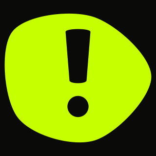
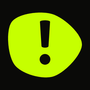
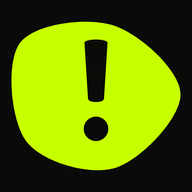
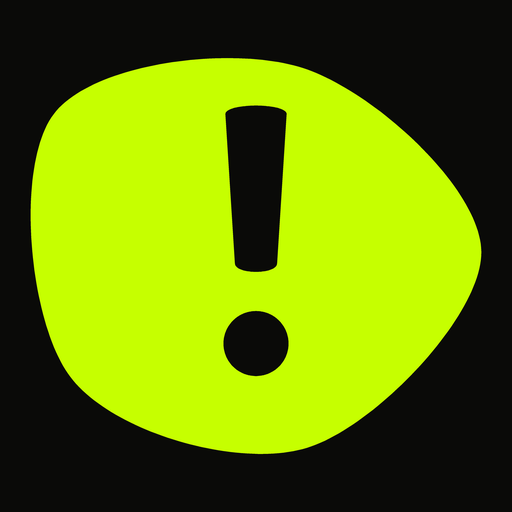
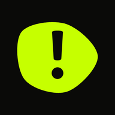
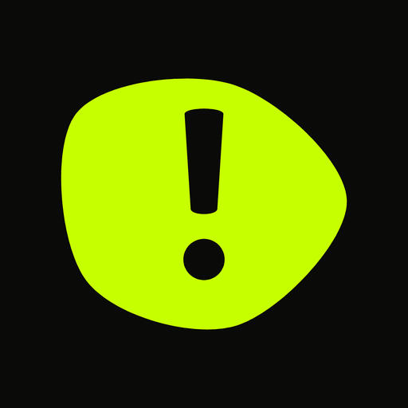
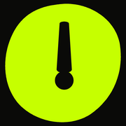
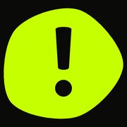
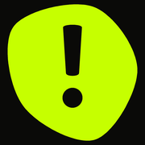
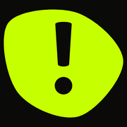

Favicon, iOS, Android e prévia de link gerados a partir da mesma geometria vetorial do símbolo Bolha Viva — não de um redesenho. Duas cores da paleta registrada, flat, sem gradiente e sem glow. Um comando: npm run assets:marca, que escreve os SVGs a partir de caminhoDaMarca.ts, rasteriza tudo e copia para public/.
Tudo em assets/favicon/, e o script já copia o que o jogo serve para public/ com os nomes que o manifest declara — android-chrome-192 vira pwa-192x192, e por aí. Um teste compara os dois lados byte a byte, porque antes eles ficaram uma geração fora de sincronia e ninguém percebeu. Sai junto og-image.png (1200×630), a prévia do link, que antes era feita à mão.
Três quadros PNG dentro de um contêiner ICO. Aba do navegador, favoritos e atalhos do Windows.

Preferido pelos navegadores atuais. Carrega a mesma correção óptica dos rasters pequenos, porque na aba ele é exibido a ~16px.

iOS e iPadOS. Opaco de propósito: o sistema pinta preto sob transparência. O respiro extra compensa a máscara squircle.


Instalação da PWA, splash screen e lista de apps quando o sistema não aplica máscara.


Android recorta o ícone na forma do launcher. Aqui o símbolo cabe inteiro no círculo de segurança de 80%.
Silhueta preta sobre fundo transparente — o Safari a recolore com o atributo color do link. Por isso ela aparece escura aqui.
A silhueta é irregular de propósito, mas de lóbulo largo: nada de ponta fina que a máscara possa comer. O risco real continua sendo a haste do ! desaparecer nos tamanhos pequenos.
Favicon a 16px, tamanho real. Se o ! não lê aqui, não lê em lugar nenhum.
Máscara squircle aplicada pelo sistema. O ícone é entregue quadrado e opaco — nunca com cantos já arredondados.
O mesmo arquivo maskable sob duas máscaras de launcher. Nada essencial encosta na borda.
O tracejado marca o círculo de 80% exigido pela especificação maskable. O símbolo ocupa 70% do lado, com folga deliberada.
Cole no <head>. São seis linhas: navegadores modernos usam o SVG, os antigos caem no ICO, o iOS usa o apple-touch-icon e o Android lê tudo pelo manifest. Não use <link rel="apple-touch-icon-precomposed"> — está obsoleto desde o iOS 7.
<link rel="icon" href="/favicon.ico" sizes="32x32">
<link rel="icon" href="/assets/favicon/favicon.svg" type="image/svg+xml">
<link rel="apple-touch-icon" href="/assets/favicon/apple-touch-icon.png">
<link rel="mask-icon" href="/assets/favicon/safari-pinned-tab.svg" color="#c6ff00">
<link rel="manifest" href="/site.webmanifest">
<meta name="theme-color" content="#0a0a08">O site.webmanifest já declara os cinco ícones, display: standalone, orientação retrato e as duas cores de sistema. theme_color e background_color são ambos --bg: a splash screen do Android nasce da mesma cor de fundo do app, sem emenda visível na abertura.
// site.webmanifest — trecho
"background_color": "#0a0a08",
"theme_color": "#0a0a08",
"display": "standalone",
"orientation": "portrait",
"icons": [
{ "src": "…/android-chrome-192.png", "sizes": "192x192", "purpose": "any" },
{ "src": "…/android-chrome-512.png", "sizes": "512x512", "purpose": "any" },
{ "src": "…/maskable-192.png", "sizes": "192x192", "purpose": "maskable" },
{ "src": "…/maskable-512.png", "sizes": "512x512", "purpose": "maskable" }
]A silhueta anterior eram cinco curvas escritas à mão que, na prática, liam como círculo — dá pra ver na prévia de link antiga: bolinha verde com exclamação. A nova tem razão de irregularidade 0,270: a distância entre o raio maior e o menor, dividida pelo raio médio. Abaixo de 0,20 a forma volta a ser bolinha a 32px; acima de 0,34 ela começa a perder reconhecimento sob máscara de launcher.

A silhueta não foi desenhada: ela sai de caminhoDaBolha(), a mesma função que deforma a Bolha na tela, com pontos: 5, raio: 118 e amplitude entre 14 e 22 — a faixa entre o repouso (8, que lê como círculo) e a gravação (34, que a 16px vira estrela-do-mar). A varredura rodou semente e tempo dentro dessa faixa e guardou quatro frames. A terceira foi a escolhida. Tem teste provando: mexer no d do SVG sem mexer no módulo reprova o npm run test.



As mesmas quatro nos tamanhos que decidem — 16, 32, 64 e 180px, em pixel cru:
! fechouNo símbolo antigo a haste descia até y=137 e o pingo começava em y=134: os dois se fundiam. A gente tampava isso só nos ícones de 48px para baixo, empurrando o pingo para baixo no raster. Agora o vão está aberto na marca mesmo — 20,5 unidades, 8,7% do diâmetro da Bolha, contra o mínimo de 5% que o design system passou a cobrar. O dot_dy do gerador foi a zero em todos os tamanhos.
O que ficou: a haste continua engrossando abaixo de 48px, e vai continuar. Ali ela mede pouco mais de um pixel e sumiria — isso é problema de raster, não defeito de geometria disfarçado. E ela agora afunila, mais larga no topo que na base: é o que tira o ar de placa de trânsito.